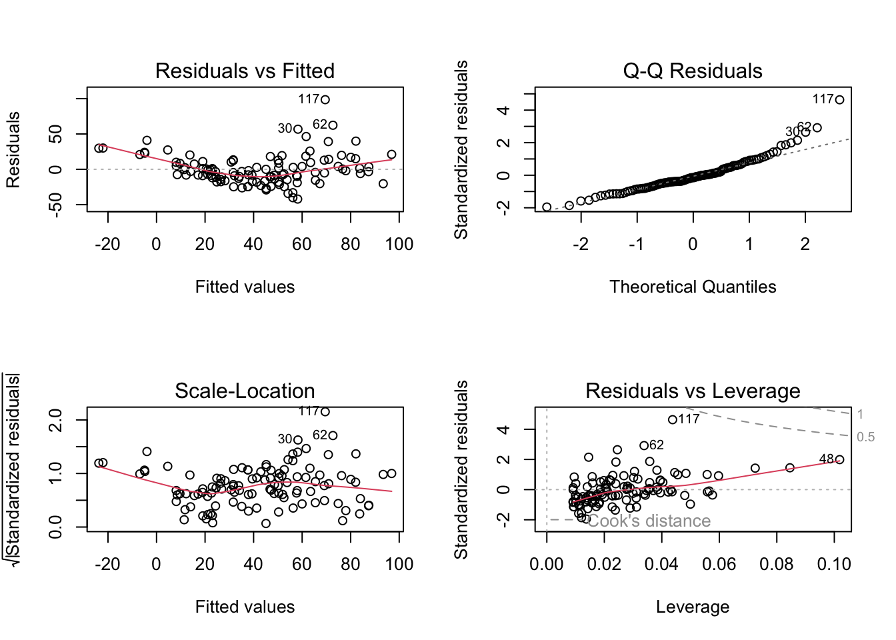
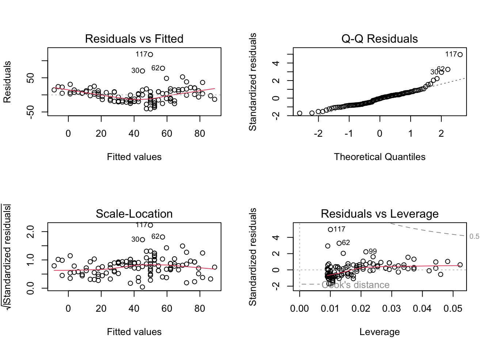

Climate = runif(100)
Temp = Climate + rnorm(100, sd = 0.2)
Growth = 0.5*Temp - 1.0*Climate + rnorm(100, sd = 0.2)
summary(lm(Growth~Temp))
##
## Call:
## lm(formula = Growth ~ Temp)
##
## Residuals:
## Min 1Q Median 3Q Max
## -0.55719 -0.18748 -0.01354 0.18858 0.59337
##
## Coefficients:
## Estimate Std. Error t value Pr(>|t|)
## (Intercept) -0.16604 0.04228 -3.927 0.00016 ***
## Temp -0.19311 0.06602 -2.925 0.00428 **
## ---
## Signif. codes: 0 '***' 0.001 '**' 0.01 '*' 0.05 '.' 0.1 ' ' 1
##
## Residual standard error: 0.2472 on 98 degrees of freedom
## Multiple R-squared: 0.0803, Adjusted R-squared: 0.07091
## F-statistic: 8.556 on 1 and 98 DF, p-value: 0.004279
summary(lm(Growth~Temp+Climate)) # correct effects!!
##
## Call:
## lm(formula = Growth ~ Temp + Climate)
##
## Residuals:
## Min 1Q Median 3Q Max
## -0.41912 -0.13228 -0.00661 0.12988 0.41630
##
## Coefficients:
## Estimate Std. Error t value Pr(>|t|)
## (Intercept) 0.009234 0.038203 0.242 0.81
## Temp 0.568083 0.102652 5.534 2.66e-07 ***
## Climate -1.088041 0.127964 -8.503 2.27e-13 ***
## ---
## Signif. codes: 0 '***' 0.001 '**' 0.01 '*' 0.05 '.' 0.1 ' ' 1
##
## Residual standard error: 0.1881 on 97 degrees of freedom
## Multiple R-squared: 0.473, Adjusted R-squared: 0.4622
## F-statistic: 43.54 on 2 and 97 DF, p-value: 3.205e-148 Multiple regression
We want to understand what happens if there are more variables in the system that also affect the response and maybe also other predictors.
The lm can be then extended to:
\[ y = a_0 + a_1*x_1 + a_2*x_2 \]
This is important because of the omitted variable bias: If there is a confounder which has an effect on the predictor and the response, and we don’t condition the model on it, the effect will be absorbed by the predictor, potentially causing a spurious correlation. Conditioning means that we need to include the variables even though we are not really interested in it! (Those variables are called nuisance parameters.)
In the worst case it can lead to a Simpson’s paradox: An unobserved variable purports the effect of a predictor on the response variable and removes the predictor’s effect or even changes its direction in the opposite direction to the true correlation.
8.1 Confounder
Confounders have effects on the response and another predictor.
Identifying confounders is the most important challenge in observational studies: For example, several studies showed that overweight adults have lower mortality. However, another study shows that these earlier results might have come up due to confounding: smoking!
smokers: higher mortality and lower BMI -> people with lower BMI have higher mortality rates
When we correct for the confounder smoking, the correlation between BMI and mortality goes in the other direction, i.e. obese people have higher mortality!
Confounders can even lead to observed correlations where in reality there is no such correlation. This is called spurious correlation.
Warning
Conclusion: Confounders can cause correlations where no causal relationship exists.
8.2 Multiple LM
The multiple linear regression can deal with confounders:
Univariate (simple) linear regression describes how y depends on x using a polynomial of x1 e.g.: \[ y = a_0 + a_1*x_1 + a_2*x_1^2 \]
Multiple linear regression expands simple linear regression to a polynomial of several explanatory variables x1, x2… e.g.: \[ y = a_0 + a_1*x_1 + a_2*x_2 + a_3*x_3 \]
Idea: if we jointly consider “all” variables in the model formula, the influence of confounding variables is incorporated
## first remove observations with NA values
newAirquality = airquality[complete.cases(airquality),]
summary(newAirquality)
## Ozone Solar.R Wind Temp
## Min. : 1.0 Min. : 7.0 Min. : 2.30 Min. :57.00
## 1st Qu.: 18.0 1st Qu.:113.5 1st Qu.: 7.40 1st Qu.:71.00
## Median : 31.0 Median :207.0 Median : 9.70 Median :79.00
## Mean : 42.1 Mean :184.8 Mean : 9.94 Mean :77.79
## 3rd Qu.: 62.0 3rd Qu.:255.5 3rd Qu.:11.50 3rd Qu.:84.50
## Max. :168.0 Max. :334.0 Max. :20.70 Max. :97.00
## Month Day
## Min. :5.000 Min. : 1.00
## 1st Qu.:6.000 1st Qu.: 9.00
## Median :7.000 Median :16.00
## Mean :7.216 Mean :15.95
## 3rd Qu.:9.000 3rd Qu.:22.50
## Max. :9.000 Max. :31.00
# simple regression
m0 = lm(Ozone ~ Temp , data = newAirquality)
summary(m0)
##
## Call:
## lm(formula = Ozone ~ Temp, data = newAirquality)
##
## Residuals:
## Min 1Q Median 3Q Max
## -40.922 -17.459 -0.874 10.444 118.078
##
## Coefficients:
## Estimate Std. Error t value Pr(>|t|)
## (Intercept) -147.6461 18.7553 -7.872 2.76e-12 ***
## Temp 2.4391 0.2393 10.192 < 2e-16 ***
## ---
## Signif. codes: 0 '***' 0.001 '**' 0.01 '*' 0.05 '.' 0.1 ' ' 1
##
## Residual standard error: 23.92 on 109 degrees of freedom
## Multiple R-squared: 0.488, Adjusted R-squared: 0.4833
## F-statistic: 103.9 on 1 and 109 DF, p-value: < 2.2e-16
plot(m0)plot(Ozone ~ Temp , data = newAirquality)
abline(m0, col = "blue", lwd = 3)
# Today: multiple linear regression
m1 = lm(Ozone ~ Temp + Wind , data = newAirquality)
# have a look at the residuals:
op <- par(mfrow = c(2,2))
plot(m1)
par(op)
summary(m1)
##
## Call:
## lm(formula = Ozone ~ Temp + Wind, data = newAirquality)
##
## Residuals:
## Min 1Q Median 3Q Max
## -42.156 -13.216 -3.123 10.598 98.492
##
## Coefficients:
## Estimate Std. Error t value Pr(>|t|)
## (Intercept) -67.3220 23.6210 -2.850 0.00524 **
## Temp 1.8276 0.2506 7.294 5.29e-11 ***
## Wind -3.2948 0.6711 -4.909 3.26e-06 ***
## ---
## Signif. codes: 0 '***' 0.001 '**' 0.01 '*' 0.05 '.' 0.1 ' ' 1
##
## Residual standard error: 21.73 on 108 degrees of freedom
## Multiple R-squared: 0.5814, Adjusted R-squared: 0.5736
## F-statistic: 74.99 on 2 and 108 DF, p-value: < 2.2e-16
# plotting multiple regression outputs
library(effects)
## Loading required package: carData
## lattice theme set by effectsTheme()
## See ?effectsTheme for details.
plot(allEffects(m1))
## Omitted variable bias
both = lm(Ozone ~ Wind + Temp, newAirquality)
wind = lm(Ozone ~ Wind , newAirquality)
temp = lm(Ozone ~ Temp, newAirquality)
summary(both)
##
## Call:
## lm(formula = Ozone ~ Wind + Temp, data = newAirquality)
##
## Residuals:
## Min 1Q Median 3Q Max
## -42.156 -13.216 -3.123 10.598 98.492
##
## Coefficients:
## Estimate Std. Error t value Pr(>|t|)
## (Intercept) -67.3220 23.6210 -2.850 0.00524 **
## Wind -3.2948 0.6711 -4.909 3.26e-06 ***
## Temp 1.8276 0.2506 7.294 5.29e-11 ***
## ---
## Signif. codes: 0 '***' 0.001 '**' 0.01 '*' 0.05 '.' 0.1 ' ' 1
##
## Residual standard error: 21.73 on 108 degrees of freedom
## Multiple R-squared: 0.5814, Adjusted R-squared: 0.5736
## F-statistic: 74.99 on 2 and 108 DF, p-value: < 2.2e-16
summary(wind)
##
## Call:
## lm(formula = Ozone ~ Wind, data = newAirquality)
##
## Residuals:
## Min 1Q Median 3Q Max
## -43.513 -18.597 -5.035 15.814 88.437
##
## Coefficients:
## Estimate Std. Error t value Pr(>|t|)
## (Intercept) 99.0413 7.4724 13.25 < 2e-16 ***
## Wind -5.7288 0.7082 -8.09 9.09e-13 ***
## ---
## Signif. codes: 0 '***' 0.001 '**' 0.01 '*' 0.05 '.' 0.1 ' ' 1
##
## Residual standard error: 26.42 on 109 degrees of freedom
## Multiple R-squared: 0.3752, Adjusted R-squared: 0.3694
## F-statistic: 65.44 on 1 and 109 DF, p-value: 9.089e-13
slopes <- data.frame(
predictor = c("Wind", "Temp"),
both.pred = round(coef(both)[2:3], digits = 2),
only.wind = c(round(coef(wind)[2], digits = 2), "NA"),
only.temp = c("NA", round(coef(temp)[2], digits = 2))
)
slopes
## predictor both.pred only.wind only.temp
## Wind Wind -3.29 -5.73 NA
## Temp Temp 1.83 NA 2.44Omitting Wind makes the effect of Temperature larger.
Problem: Multiple regression can separate the effect of collinear explanatory variables, but only, if collinearity is not too strong.
Solution: If the correlation is really strong, we can omit one variable and interpret the remaining collinear variable as representing both.
8.3 Interactions between variables
If one predictor influences the effect of the other predictor, we can include an interaction term into our model:
\[ y \sim a + b + a:b \]
or:
\[ y \sim a*b \]
# Include interaction
m2 = lm(Ozone ~ scale(Wind)* scale(Temp) , data = newAirquality)
# if including interactions, always scale your predictor variables!
# scale: subtracts the mean and divides by standard deviation
summary(m2)
##
## Call:
## lm(formula = Ozone ~ scale(Wind) * scale(Temp), data = newAirquality)
##
## Residuals:
## Min 1Q Median 3Q Max
## -40.930 -11.193 -3.034 8.193 97.456
##
## Coefficients:
## Estimate Std. Error t value Pr(>|t|)
## (Intercept) 38.469 2.137 18.002 < 2e-16 ***
## scale(Wind) -11.758 2.238 -5.253 7.68e-07 ***
## scale(Temp) 17.544 2.239 7.837 3.62e-12 ***
## scale(Wind):scale(Temp) -7.367 1.848 -3.987 0.000123 ***
## ---
## Signif. codes: 0 '***' 0.001 '**' 0.01 '*' 0.05 '.' 0.1 ' ' 1
##
## Residual standard error: 20.37 on 107 degrees of freedom
## Multiple R-squared: 0.6355, Adjusted R-squared: 0.6253
## F-statistic: 62.19 on 3 and 107 DF, p-value: < 2.2e-16
op <- par(mfrow = c(2,2))
plot(m2)
par(op)The influence of temperature on growth depends on the amount of precipitation, or: If there’s not enough water, also higher temperatures cannot increase growth.
Example:
# How does everything change, if we have factorial predictors?
newAirquality$MonthFactor = as.factor(newAirquality$Month)
m4 = lm(sqrt(Ozone) ~ MonthFactor + scale(Wind) * scale(Temp) * scale(Solar.R) ,
data = newAirquality)
summary(m4)
##
## Call:
## lm(formula = sqrt(Ozone) ~ MonthFactor + scale(Wind) * scale(Temp) *
## scale(Solar.R), data = newAirquality)
##
## Residuals:
## Min 1Q Median 3Q Max
## -2.6096 -0.8869 -0.2067 0.7647 4.3191
##
## Coefficients:
## Estimate Std. Error t value Pr(>|t|)
## (Intercept) 6.12172 0.37148 16.479 < 2e-16 ***
## MonthFactor6 -0.54487 0.60633 -0.899 0.371025
## MonthFactor7 -0.37571 0.51347 -0.732 0.466072
## MonthFactor8 -0.03770 0.52839 -0.071 0.943262
## MonthFactor9 -0.74343 0.43308 -1.717 0.089179 .
## scale(Wind) -0.76983 0.16456 -4.678 9.18e-06 ***
## scale(Temp) 1.35350 0.20937 6.465 3.86e-09 ***
## scale(Solar.R) 0.65689 0.16212 4.052 0.000101 ***
## scale(Wind):scale(Temp) -0.30440 0.14655 -2.077 0.040379 *
## scale(Wind):scale(Solar.R) -0.07695 0.17222 -0.447 0.655999
## scale(Temp):scale(Solar.R) 0.22985 0.15451 1.488 0.140040
## scale(Wind):scale(Temp):scale(Solar.R) 0.03202 0.15179 0.211 0.833366
## ---
## Signif. codes: 0 '***' 0.001 '**' 0.01 '*' 0.05 '.' 0.1 ' ' 1
##
## Residual standard error: 1.328 on 99 degrees of freedom
## Multiple R-squared: 0.7335, Adjusted R-squared: 0.7039
## F-statistic: 24.78 on 11 and 99 DF, p-value: < 2.2e-16
m5 = lm(sqrt(Ozone) ~ MonthFactor + scale(Wind) + scale(Temp) + scale(Solar.R)
+ scale(Wind):scale(Temp)
+ scale(Wind):scale(Solar.R)
+ scale(Temp):scale(Solar.R),
data = newAirquality)
summary(m5)
##
## Call:
## lm(formula = sqrt(Ozone) ~ MonthFactor + scale(Wind) + scale(Temp) +
## scale(Solar.R) + scale(Wind):scale(Temp) + scale(Wind):scale(Solar.R) +
## scale(Temp):scale(Solar.R), data = newAirquality)
##
## Residuals:
## Min 1Q Median 3Q Max
## -2.6023 -0.9182 -0.2180 0.7713 4.3209
##
## Coefficients:
## Estimate Std. Error t value Pr(>|t|)
## (Intercept) 6.12350 0.36960 16.568 < 2e-16 ***
## MonthFactor6 -0.54871 0.60315 -0.910 0.3652
## MonthFactor7 -0.39194 0.50524 -0.776 0.4397
## MonthFactor8 -0.04701 0.52402 -0.090 0.9287
## MonthFactor9 -0.74873 0.43028 -1.740 0.0849 .
## scale(Wind) -0.75588 0.14997 -5.040 2.07e-06 ***
## scale(Temp) 1.35192 0.20823 6.492 3.29e-09 ***
## scale(Solar.R) 0.65178 0.15953 4.086 8.88e-05 ***
## scale(Wind):scale(Temp) -0.31305 0.14002 -2.236 0.0276 *
## scale(Wind):scale(Solar.R) -0.09259 0.15469 -0.599 0.5508
## scale(Temp):scale(Solar.R) 0.23573 0.15126 1.558 0.1223
## ---
## Signif. codes: 0 '***' 0.001 '**' 0.01 '*' 0.05 '.' 0.1 ' ' 1
##
## Residual standard error: 1.321 on 100 degrees of freedom
## Multiple R-squared: 0.7334, Adjusted R-squared: 0.7068
## F-statistic: 27.51 on 10 and 100 DF, p-value: < 2.2e-16
# short form for including only two-way interactions:
m5 = lm(sqrt(Ozone) ~ MonthFactor + (scale(Wind) + scale(Temp) + scale(Solar.R))^2,
data = newAirquality)
summary(m5)
##
## Call:
## lm(formula = sqrt(Ozone) ~ MonthFactor + (scale(Wind) + scale(Temp) +
## scale(Solar.R))^2, data = newAirquality)
##
## Residuals:
## Min 1Q Median 3Q Max
## -2.6023 -0.9182 -0.2180 0.7713 4.3209
##
## Coefficients:
## Estimate Std. Error t value Pr(>|t|)
## (Intercept) 6.12350 0.36960 16.568 < 2e-16 ***
## MonthFactor6 -0.54871 0.60315 -0.910 0.3652
## MonthFactor7 -0.39194 0.50524 -0.776 0.4397
## MonthFactor8 -0.04701 0.52402 -0.090 0.9287
## MonthFactor9 -0.74873 0.43028 -1.740 0.0849 .
## scale(Wind) -0.75588 0.14997 -5.040 2.07e-06 ***
## scale(Temp) 1.35192 0.20823 6.492 3.29e-09 ***
## scale(Solar.R) 0.65178 0.15953 4.086 8.88e-05 ***
## scale(Wind):scale(Temp) -0.31305 0.14002 -2.236 0.0276 *
## scale(Wind):scale(Solar.R) -0.09259 0.15469 -0.599 0.5508
## scale(Temp):scale(Solar.R) 0.23573 0.15126 1.558 0.1223
## ---
## Signif. codes: 0 '***' 0.001 '**' 0.01 '*' 0.05 '.' 0.1 ' ' 1
##
## Residual standard error: 1.321 on 100 degrees of freedom
## Multiple R-squared: 0.7334, Adjusted R-squared: 0.7068
## F-statistic: 27.51 on 10 and 100 DF, p-value: < 2.2e-16
# get overall effect of Month:
anova(m5)
## Analysis of Variance Table
##
## Response: sqrt(Ozone)
## Df Sum Sq Mean Sq F value Pr(>F)
## MonthFactor 4 158.726 39.681 22.7249 2.261e-13 ***
## scale(Wind) 1 149.523 149.523 85.6296 4.282e-15 ***
## scale(Temp) 1 126.124 126.124 72.2290 1.899e-13 ***
## scale(Solar.R) 1 19.376 19.376 11.0961 0.0012129 **
## scale(Wind):scale(Temp) 1 20.639 20.639 11.8198 0.0008556 ***
## scale(Wind):scale(Solar.R) 1 1.803 1.803 1.0328 0.3119518
## scale(Temp):scale(Solar.R) 1 4.241 4.241 2.4288 0.1222856
## Residuals 100 174.616 1.746
## ---
## Signif. codes: 0 '***' 0.001 '**' 0.01 '*' 0.05 '.' 0.1 ' ' 1
# this is doing a type I ANOVA = sequential
# order in which you include the predictors changes the estimates and p-values
# If you want to do a type II ANOVA, use ANova() from the car package
library(car)
Anova(m5) # Anova with capital A
## Anova Table (Type II tests)
##
## Response: sqrt(Ozone)
## Sum Sq Df F value Pr(>F)
## MonthFactor 9.557 4 1.3683 0.2503349
## scale(Wind) 41.993 1 24.0488 3.641e-06 ***
## scale(Temp) 78.938 1 45.2067 1.112e-09 ***
## scale(Solar.R) 23.189 1 13.2797 0.0004276 ***
## scale(Wind):scale(Temp) 8.728 1 4.9983 0.0275955 *
## scale(Wind):scale(Solar.R) 0.626 1 0.3582 0.5508395
## scale(Temp):scale(Solar.R) 4.241 1 2.4288 0.1222856
## Residuals 174.616 100
## ---
## Signif. codes: 0 '***' 0.001 '**' 0.01 '*' 0.05 '.' 0.1 ' ' 1
#type II ANOVA: all other predictors have already been taken into account
# Does an additional predictor explain some of the variance on top of that?8.4 Model selection
We’ve learned that we should include variables in the model that are collinear, that is they correlate with other predictors, but how many and which factors should we include?
Famous example: Female hurricanes are deadlier than male hurricanes (Jung et al., 2014)
They have analyzed the number of fatalities of hurricane and claimed that there is an effect of femininity of the name on the number of deads (while correcting for confounders). They recommend to give hurricans only male names because it would considerably reduce the number of deads.
library(DHARMa)
## This is DHARMa 0.4.6. For overview type '?DHARMa'. For recent changes, type news(package = 'DHARMa')
library(effects)
?hurricanes
str(hurricanes)
## Classes 'tbl_df', 'tbl' and 'data.frame': 92 obs. of 14 variables:
## $ Year : num 1950 1950 1952 1953 1953 ...
## $ Name : chr "Easy" "King" "Able" "Barbara" ...
## $ MasFem : num 6.78 1.39 3.83 9.83 8.33 ...
## $ MinPressure_before : num 958 955 985 987 985 960 954 938 962 987 ...
## $ Minpressure_Updated_2014: num 960 955 985 987 985 960 954 938 962 987 ...
## $ Gender_MF : num 1 0 0 1 1 1 1 1 1 1 ...
## $ Category : num 3 3 1 1 1 3 3 4 3 1 ...
## $ alldeaths : num 2 4 3 1 0 60 20 20 0 200 ...
## $ NDAM : num 1590 5350 150 58 15 ...
## $ Elapsed_Yrs : num 63 63 61 60 60 59 59 59 58 58 ...
## $ Source : chr "MWR" "MWR" "MWR" "MWR" ...
## $ ZMasFem : num -0.000935 -1.670758 -0.913313 0.945871 0.481075 ...
## $ ZMinPressure_A : num -0.356 -0.511 1.038 1.141 1.038 ...
## $ ZNDAM : num -0.439 -0.148 -0.55 -0.558 -0.561 ...
library(glmmTMB)
## Warning in checkMatrixPackageVersion(): Package version inconsistency detected.
## TMB was built with Matrix version 1.5.4
## Current Matrix version is 1.5.4.1
## Please re-install 'TMB' from source using install.packages('TMB', type = 'source') or ask CRAN for a binary version of 'TMB' matching CRAN's 'Matrix' package
## Warning in checkDepPackageVersion(dep_pkg = "TMB"): Package version inconsistency detected.
## glmmTMB was built with TMB version 1.9.6
## Current TMB version is 1.9.4
## Please re-install glmmTMB from source or restore original 'TMB' package (see '?reinstalling' for more information)
m1 = glmmTMB(alldeaths ~ MasFem*
(Minpressure_Updated_2014 + scale(NDAM)),
data = hurricanes, family = nbinom2)
summary(m1)
## Family: nbinom2 ( log )
## Formula: alldeaths ~ MasFem * (Minpressure_Updated_2014 + scale(NDAM))
## Data: hurricanes
##
## AIC BIC logLik deviance df.resid
## 660.7 678.4 -323.4 646.7 85
##
##
## Dispersion parameter for nbinom2 family (): 0.787
##
## Conditional model:
## Estimate Std. Error z value Pr(>|z|)
## (Intercept) 69.661590 23.425598 2.974 0.002942 **
## MasFem -5.855078 2.716589 -2.155 0.031138 *
## Minpressure_Updated_2014 -0.069870 0.024251 -2.881 0.003964 **
## scale(NDAM) -0.494094 0.455968 -1.084 0.278536
## MasFem:Minpressure_Updated_2014 0.006108 0.002813 2.171 0.029901 *
## MasFem:scale(NDAM) 0.205418 0.061956 3.316 0.000915 ***
## ---
## Signif. codes: 0 '***' 0.001 '**' 0.01 '*' 0.05 '.' 0.1 ' ' 1Interactions -> we need to scale variables:
m2 = glmmTMB(alldeaths ~ scale(MasFem)*
(scale(Minpressure_Updated_2014) + scale(NDAM)+scale(sqrt(NDAM))),
data = hurricanes, family = nbinom2)
summary(m2)
## Family: nbinom2 ( log )
## Formula:
## alldeaths ~ scale(MasFem) * (scale(Minpressure_Updated_2014) +
## scale(NDAM) + scale(sqrt(NDAM)))
## Data: hurricanes
##
## AIC BIC logLik deviance df.resid
## 634.9 657.6 -308.4 616.9 83
##
##
## Dispersion parameter for nbinom2 family (): 1.12
##
## Conditional model:
## Estimate Std. Error z value
## (Intercept) 2.28082 0.10850 21.022
## scale(MasFem) 0.05608 0.10672 0.525
## scale(Minpressure_Updated_2014) -0.14267 0.17804 -0.801
## scale(NDAM) -1.11104 0.28030 -3.964
## scale(sqrt(NDAM)) 2.10764 0.36487 5.776
## scale(MasFem):scale(Minpressure_Updated_2014) 0.07371 0.19618 0.376
## scale(MasFem):scale(NDAM) -0.10159 0.27080 -0.375
## scale(MasFem):scale(sqrt(NDAM)) 0.32960 0.36594 0.901
## Pr(>|z|)
## (Intercept) < 2e-16 ***
## scale(MasFem) 0.599
## scale(Minpressure_Updated_2014) 0.423
## scale(NDAM) 7.38e-05 ***
## scale(sqrt(NDAM)) 7.63e-09 ***
## scale(MasFem):scale(Minpressure_Updated_2014) 0.707
## scale(MasFem):scale(NDAM) 0.708
## scale(MasFem):scale(sqrt(NDAM)) 0.368
## ---
## Signif. codes: 0 '***' 0.001 '**' 0.01 '*' 0.05 '.' 0.1 ' ' 1The effect of femininity is gone! Already with the scaled variables, but also with the transformation with the NDAM variable. The question was raised which of both is more reasonable, whether the relationship between damage and mortality isn’t a straight line or that the gender of the hurricane names affect deaths (Bob O’Hara and GrrlScientist). They argue that the model with the transformed variable fits the data better which brings us to the topic of this section, how to choose between different models? Answering this question if the goal of model selection.
Why not include all the variables we can measure in our model? Problem with the full model:
If you have more parameters than data points, the model cannot be fitted at all
Even with n (samples) ~ k (number of parameters), model properties become very unfavorable (high p-values and uncertainties/standard errors) –> Overfitting
A “good model” depends on the goal of the analysis, do we want to optimize:
Predictive ability – how well can we predict with the model?
Inferential ability – do we identify the true values for the parameters (true effects), are the p-values correct, can we correctly say that a variable has an effect?
The more complex a model gets, the better it fits to the data, but there’s a downside, the bias-variance tradeoff.
Explanation bias-variance tradeoff
Example:
# Compare different competing models:
# let's compare models m3 and m5 to decide which one explains our data better:
# 1. LRT
anova(m3, m5)
# RSS = residual sum of squares = variance not explained by the model
# smaller RSS = better model
# p-value
#2. AIC
AIC(m3)
AIC(m5)
# also here, model m5 is better
#### Demonstration: Why interpretation of effect sizes and p-values
### after extensive model selection is not a good idea:
library(MASS)
set.seed(1)
#make up predictors:
dat = data.frame(matrix(runif(20000), ncol = 100))
# create a response variable
dat$y = rnorm(200)
fullModel = lm(y ~ ., data = dat)
sum <- summary(fullModel)
mean(sum$coefficients[,4] < 0.05)
# 0.019: less than 2 % false positives = type I error rate
selection = stepAIC(fullModel)
sum.sel <- summary(selection)
mean(sum.sel$coefficients[,4] < 0.05)
# 0.48: Now almost 50 % of our results are false positives!!!8.5 Formula syntax
| Formula | Meaning | Details |
|---|---|---|
y~x_1 |
\(y=a_0 +a_1*x_1\) | Slope+Intercept |
y~x_1 - 1 |
\(y=a_1*x_1\) | Slope, no intercept |
y~I(x_1^2) |
\(y=a_0 + a_1*(x_1^2)\) | Quadratic effect |
y~x_1+x_2 |
\(y=a_0+a_1*x_1+a_2*x_2\) | Multiple linear regression (two variables) |
y~x_1:x_2 |
\(y=a_0+a_1*(x_1*x_2)\) | Interaction between x1 and x2 |
y~x_1*x_2 |
\(y=a_0+a_1*(x_1*x_2)+a_2*x_1+a_3*x_2\) | Interaction and main effects |